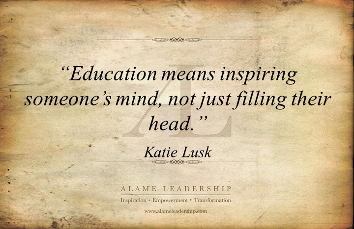
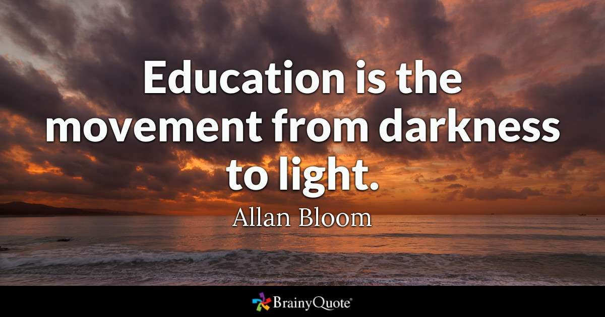
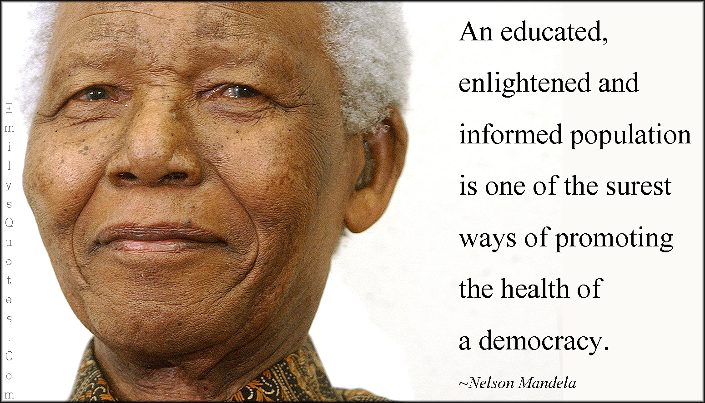
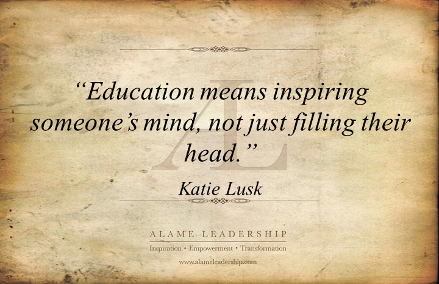
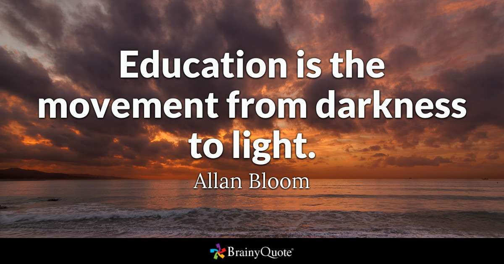
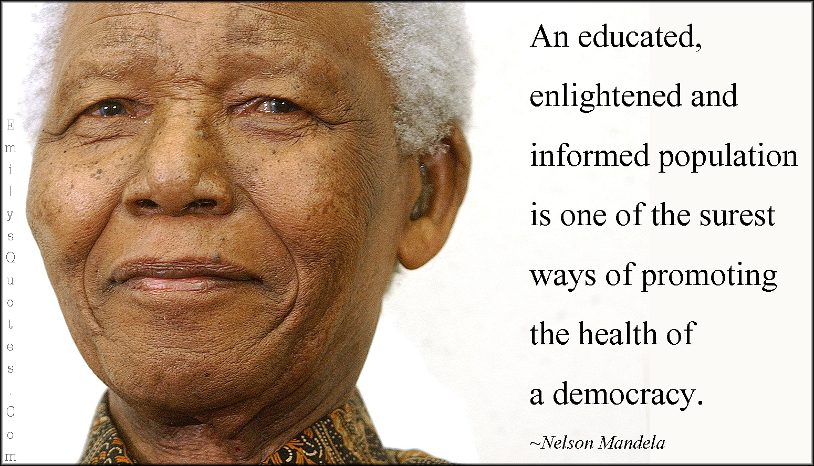

QUOTES THAT HELPED ME THROUGH SCHOOL




Before starting my service with AmeriCorps VISTA Program, I was a recent graduate with the CNM Ingenuity in Albuquerque, NM. I attended the JAVA/ Android Bootcamp and successfully received my certificate in August of 2019. What my previous plan entailed was to gain experience by being employed as an intern so that I can gain real-world hands-on experience. At the same time, I wanted to keep going with my schooling.
Presently I am working with the AmericaCorp VISTA Program and while gaining some experience I also am volunteering with a great program, STEAM New Mexico. With STEAM I can help with fighting poverty through using science, technology, engineering, arts, and mathematics. I can volunteer my time and efforts while gaining some real-world experience. I am glad that I found a position where my time is appreciated and my worksite has gone above and beyond in molding my position into what it is now.
Looking into the future I cannot see clearly what it holds but what I want to accomplish is easier said that done. Right now, my future goal is to finish off school at Central New Mexico Community College (CNM) with an A.A.S in Computer Information Systems – Computer Programming. Also try to pass my JAVA Certification sometimes before February 2020. After CNM I would like to transfer to a University and receive my bachelor’s in Computer Science. While working on that I also would like to get into Computer Networking side of things and try to get my certificates such as CISCO, CompTIA, Microsoft MCS, etc. One day my career goal is to Network Architect/Engineer and be an app developer.


